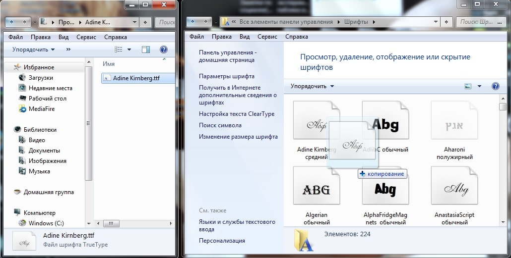

Существует два способа, которые помогут быстро вставить скаченный шрифт в ваш софт Фотошоп. Давайте узнаем секреты и того, и другого. Ведь всем хочется установить красивые шрифты как для фотошопа так и для других программ.
1. Воспользуемся помощью установщика шрифта.
Если у вас установлена операционная система Windows 7, можете быть уверенными, что данный метод установки гарантированно сработает. К тому же, он очень удобный в процессе работы и на установку не потребует большой отрезок свободного времени. Преимуществом является и то, что новый скаченный шрифт отобразится даже в других графических софтах. Они уже имеются на вашем компьютере. И одна из подобных программ — популярный MS Word. Среди преимуществ такого метода можно отметить и то, что из-за него не тормозит Фотошоп. К тому же, вам не нужно будет дополнительно производить устанавку какой-либо другой программы, которая замедлит работу ОС.
Итак, что же потребуется?
Для начала откройте файл, который вы скачали со шрифтом. Он наверняка найдется в загрузках. Когда нажмете, появится окно «Установить». Следуйте вкладкам «Далее» до конца установки.
Шрифт самостоятельно определит наилучший адрес для себя, за счет чего появится во всех текстовых вариациях на вашем компьютере. Разумеется, это касается и софта, над которым мы работаем — Фотошопа. Кстати в окне, который откроется при установке, вы сразу же определите дизайн нового шрифта. Определенно, это добавляет удобства.
2. Через Панель управления
Еще один способ – не менее легкий и быстрый.
Через кнопку Пуск зайдите в «Панель управления».
Там увидите кнопку «Шрифты».
Перед вами откроется папка со всеми вариантами, которые вы давно используете. Они были ранее установлены на компьютере. Вам останется лишь перенести файл с новым шрифтом в эту коллекцию. Этот способ также гарантирует, что после окончания процесса установки новый шрифт будет отображаться во всех графических софтах и программах по типу Adobe Photoshop и MS Word.

И небольшой нюанс перед началом работы! Убедитесь, что данный шрифт не был ранее установлен в вашей коллекции шрифтов. Это гораздо ускорит процесс работы в Фотошопе.
Инструкция надеемся помогла осталось только скачать сами шрифты и установить!
Фотошоп 2019 года где мужчина на ресторан на фотошопе
Я собираюсь пойти на курсы «Дизайнер компьютерной графики», и мне эти уроки очень помогают. Спасибо.
Здравствуйте. Скачала шрифт Olietta script Lyrica. Успешно пользовалась им 4 года, последний раз — в декабре 2015. С 1 января 2016 года по непонятной причине прописные буквы этого шрифта изменились, она стали точно такие же, как и заглавные, только уменьшенного размера. Пропала вся красота шрифта. Переустановка всех шрифтов не помогла. Фотошоп у меня CS5 — русский. Помогите! Как это можно исправить?
Я про сам фотошоп
А на Видовс 7 профессианальную установится?
да конечно.